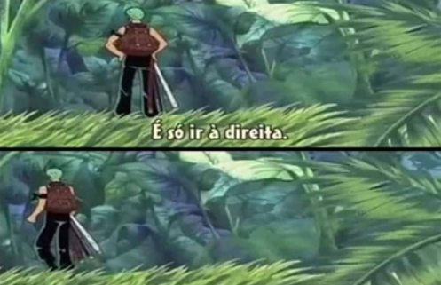
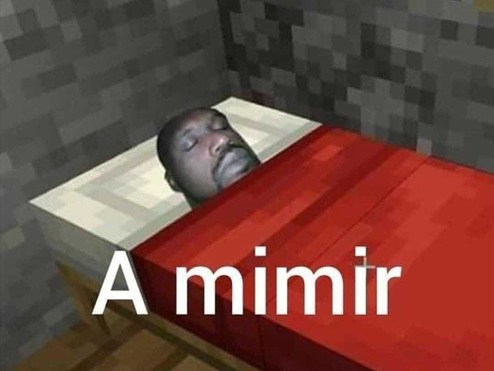

Você resolve viajar, e decide parar na praia mais próxima, que não era a Praia de Dentro
Você começa a caminhar pela primeira praia à vista, sendo Praia de Fora

Você errou a praia, parabéns. Aperta o F5 e recomeça

Você encontra um mapa do tesouro na praia, tem um X gigante apontando onde tem que ir

Você dormiu e perdeu tudo de interessante na praia, e o mapa sumiu. Aperta o F5 e recomeça
Você encontra um relevo estranho, ao cavar você acha um tesouro e pega as riquezas, parabéns! 👏👏
Você joga fora, aproveita a praia e vai embora. Mais tarde você vê que um cara encontrou um tesouro na praia que você estava, parabéns Einstein 2